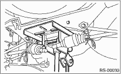
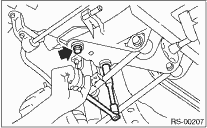

CAUTION:
Do not apply excessive tension to the ABS wheel speed sensor harness.
1. Disconnect the ground cable from the battery.
2. Loosen the wheel nuts. Lift up the vehicle, and remove the wheels.
3. Disconnect the connector from the rear vehicle height sensor. (HID model, right side only)

4. Remove the nuts that hold the lateral link and rear vehicle height sensor bracket. (HID model, right side only)

5. Remove bolt (A) and clip (B) fixing the rear vehicle height sensor bracket to the crossmember, then remove the rear vehicle height sensor assembly. (HID model, right side only)

6. Separate the front exhaust pipe from the rear exhaust pipe.
7. Remove the rear exhaust pipe and muffler.
8. Remove the rear differential.
 or
or
9. Place a transmission jack under the rear crossmember.

10. Remove the bolts securing the crossmember to the vehicle body, and remove the crossmember.

11. Scribe an alignment mark on the rear lateral link cam bolt and crossmember.
12. Remove the front and rear lateral links by loosening the nuts.